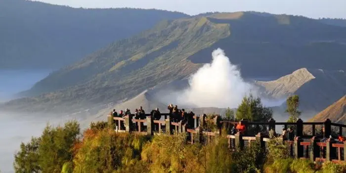

Bromo adalah nama sebuah gunung yang berlokasi di Kabupaten Probolinggo, Jawa Timur.
Gunung Bromo adalah bagian dari Taman Nasional Bromo Tengger Semeru yang terkenal di Indonesia.
Menurut sejarah, Gunung Bromo terbentuk dari letusan dahsyat Gunung Tengger,
yang membentuk kaldera berdiameter lebih dari 8 kilometer.
gunung bromo.gunung bromo.
Objek wisata Bromo selalu menarik minat para pelancong baik dari dalam maupun luar negeri.
Bromo menawarkan eksotisme yang tidak bisa didapat dari tempat lain di Indonesia. Setiap hari,
ratusan wisatawan lokal dan mancanegara berbondong-bondong datang untuk menikmati kemegahan alam Bromo.
Objek wisata Bromo selalu menarik minat para pelancong baik dari dalam maupun luar negeri.
Bromo menawarkan eksotisme yang tidak bisa didapat dari tempat lain di Indonesia. Setiap hari,
ratusan wisatawan lokal dan mancanegara berbondong-bondong datang untuk menikmati kemegahan alam Bromo.
GUNUNG BROMO
1. Kawah Gunung Bromo

Objek wisata Bromo yang pertama adalah kawah gunungnya.
Kawah gunung Bromo adalah destinasi yang wajib dikunjungi.
Di sana, Anda bisa melihat secara langsung kecantikan kawah Bromo yang begitu memesona dan alami.
Untuk mencapainya kawah gunung Bromo,
Anda hanya perlu berjalan kaki sekitar 2 km dari area parkir.
Anda juga dapat menyewa dan menaiki kuda untuk menuju kawah gunung ini.
2. Padang Rumput Savana

Obyek wisata Bromo yang kedua adalah Padang Rumput Savana.
Padang rumput savana Bromo terletak di selatan timur gunung.
Padang rumput ini terletak pada sebuah lembah hijau yang di kelilingi tebing-tebing menjulang tinggi dan beberapa punggung gunung kecil.
Padang Rumput Savana Bromo yang sangat luas ini sangat menakjubkan dan membuat kaget,
karena jalur mencapai savana adalah lautan pasir yang gersang, namun saat memasuki padang rumput Anda akan disuguhi oleh pemandangan yang benar-benar hijau.
Terletak di lembah jemplang, akses termudah untuk menuju padang rumput ini adalah dengan menunggangi kendaraan biasa atau sepeda motor via Malang atau Lumajang.
3. Pasir Berbisik

Objek wisata Bromo yang ketiga adalah Pasir Berbisik. Sebelum sampai kawah,
Anda akan disambut dengan pemandangan hamparan pasir yang cukup luas.
Hamparan pasir ini diberi nama Pasir Berbisik.
Areanya cukup luas, sehingga memudahkan pengunjung untuk mengambil spot terbaik guna berswafoto. Selain itu
Di pasir berbisik ini Anda juga dapat menikmati kegiatan lain seperti mengendarai motor trail, menunggangi kuda,
Dan lain sebagainya. Lokasinya berada di sebelah timur puncak Bromo.
4.Bukit Teletubbies Bromo

Objek wisata Bromo yang keempat adalah Bukit Teletubbies Bromo.
Bukit Teletubbies telah menjadi salah satu obyek favorit bagi banyak wisatawan untuk sekadar berjalan-jalan menikmati pemandangan sambil berfoto-foto.
Bukit Teletubbies Bromo benar-benar menawarkan pemandangan cantik gunung Bromo dengan deretan bukit hijau, dan area bukit ini juga terbukti menjadi spot foto terbaik.
Bukit Teletubbies dipenuhi dengan rerumputan hijau yang sangat cantik dan terjaga rapi.
5. Pura Luhur Poten

Objek wisata Gunung Bromo yang kelima adalah Pura Luhur Poten.
Ini adalah tempat wisata yang cukup unik.
Jika objek wisata gunung Bromo yang sebelumnya dipenuhi dengan keindahan alam,
sekarang Anda akan menemui tempat ibadah yang disebut Pura Luhur Poten. Pura di sini merupakan tempat ibadah warga sekitar yang memeluk agama Hindu.
Saat perayaan Nyepi tiba,
kawasan ini selalu ramai oleh kunjungan warga lokal yang ingin melakukan ibadah.
Biasanya, kawasan Taman Nasional Bromo Tengger pun juga ikut ditutup demi kenyamanan warga yang ingin melaksanakan ibadahnya di Pura ini.
6. B 29 Argosari

Objek wisata gunung Bromo yang keenam adalah B 29 Argosari.
B 29 Argosari adalah salah satu spot camping favorit di daerah Bromo.
Destinasi wisata yang satu ini memang cukup asing bagi pengunjung Bromo.
Tempat ini merupakan puncak yang paling tinggi di kawasan Wisata Gunung Bromo, lebih tinggi dari penanjakan 1.
Udaranya yang dingin dengan pemandangan yang sangat indah serta ditambah hamparan tumbuhan khas dari dataran tinggi membuat kawasan wisata ini sangat sayang untuk dilewatkan.
Letak B 29 Argosari berada di desa Argosari, kec.
Senduro, sekitar 40km dari kota Lumajang.
Untuk menuju ke B 29 ini, akses termudah adalah melalui Senduro Lumajang, jalur selatan.
7. Bukit Mentigen

Objek wisata gunung Bromo yang ketujuh adalah Bukit Mentingen.
Selain Penanjakan 1 dan Penanjakan 2, alternatif ketiga untuk spot view sunrise adalah dari Bukit Mentigen.
Di sini, pengunjung cukup berjalan kaki saja dari area penginapan atau hotel di daerah Cemara Lawang Probolinggo.
Walaupun tidak terlalu tinggi,
Bukit Mentingen dapat menjadi alternatif terbaik jika Anda mengunjungi Bromo dengan model backpacker,
tidak membawa kendaraan sendiri baik roda 4 maupun roda 2.
8. Bukit Kingkong

Objek wisata Gunung Bromo yang kedelapan adalah Bukit Kingkong.
Bukit Kingkong telah menjadi salah satu tempat yang sering digunakan untuk melihat kecantikan sunrise di Bromo.
Tempatnya tidak jauh dari penanjakan 1, jaraknya sekitar 2,5 km.
Meskipun menjadi alternatif untuk melihat sunrise, namun tempat ini begitu populer di kalangan wisatawan.
Sehingga untuk bisa menyaksikan keindahan sunrise Anda harus rela berdesakan dengan wisatawan lain yang sama-sama ingin menyaksikannya dari bukit ini.